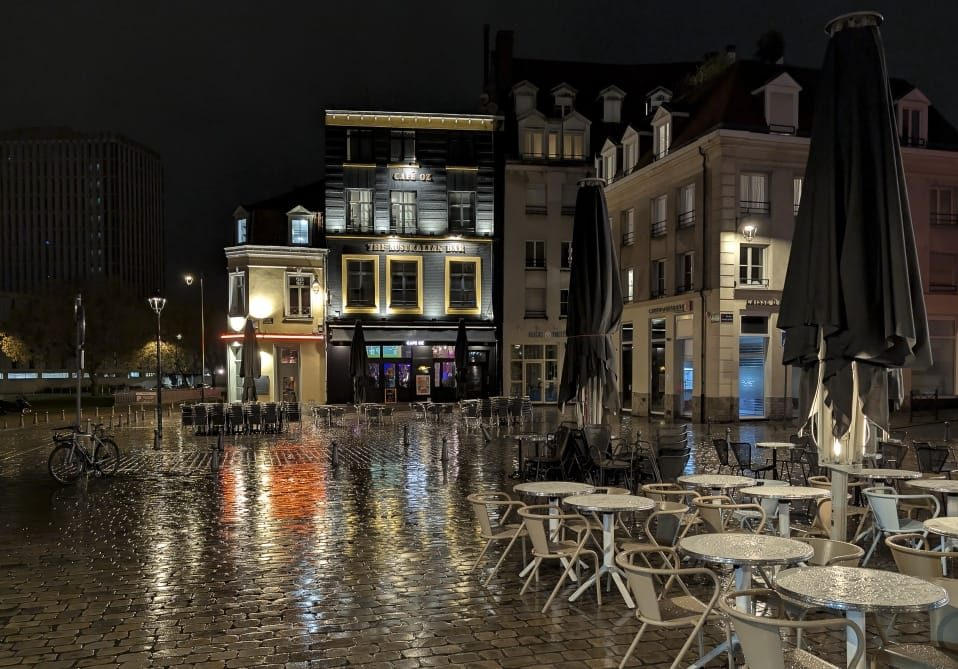

Lille, racontée par quelqu'un qui y vit.
Un guide indépendant pour découvrir Lille sans les clichés : où manger, où sortir, où se perdre dans les ruelles du Vieux-Lille, et comment profiter de la ville comme un habitué plutôt que comme un touriste pressé.
Commencer par les lieux à visiter L'Opéra de Lille
L'Opéra de Lille
Le marché de Noël de Lille : le guide 2026
Quatre-vingt-dix chalets place Rihour, la grande roue sur la Grand'Place, et six semaines d'illuminations. Où aller, quand y aller pour éviter la foule, et combien prévoir.
Lire le guide de NoëlLe guide
Événements
Ce qui anime la ville : le marché de Noël, la Braderie, et les rendez-vous qui rythment l'année lilloise.

Lieux à visiter
Ce qu'il ne faut pas manquer : Vieux-Lille, le Beffroi, le Palais des Beaux-Arts, la Citadelle — et quelques adresses moins connues.
Restaurants
Manger des spécialités du Nord : carbonnade, welsh, gaufres de Meert, et les meilleures tables du Vieux-Lille pour tous les budgets.

Bars & sorties
Où boire un verre le soir : de la rue Solférino aux estaminets du Vieux-Lille en passant par Wazemmes, selon l'ambiance recherchée.
Excursions
Bruges, Bruxelles et Tournai : trois villes à moins d'une heure de train, faciles à faire dans la journée depuis Lille.